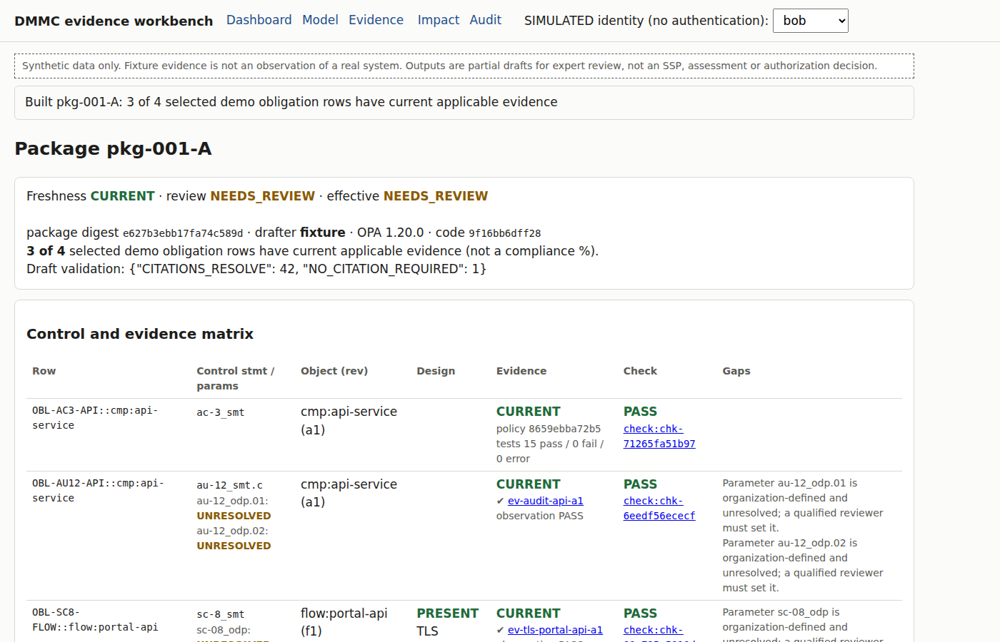
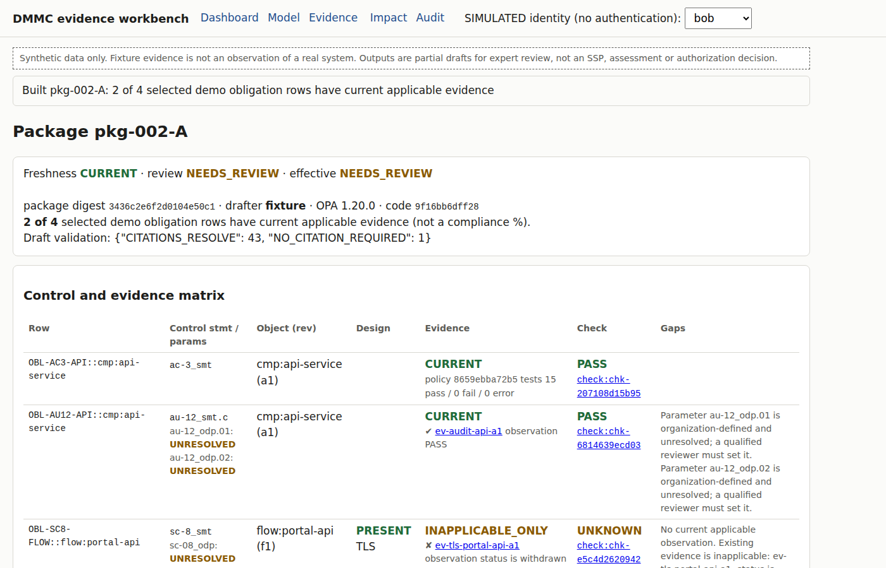
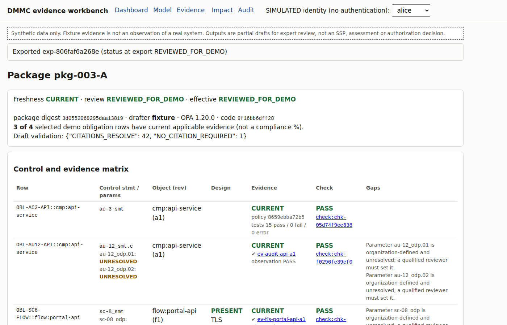
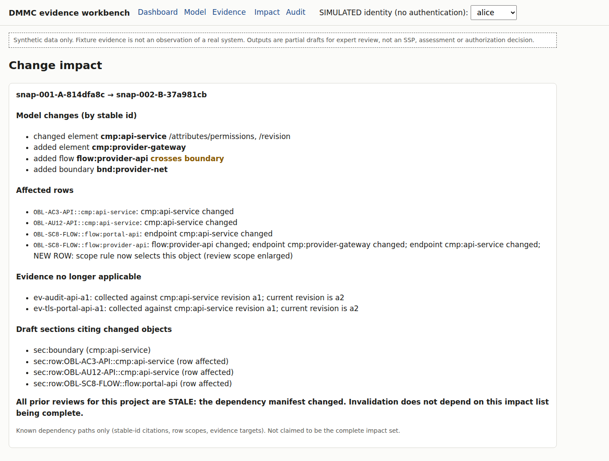
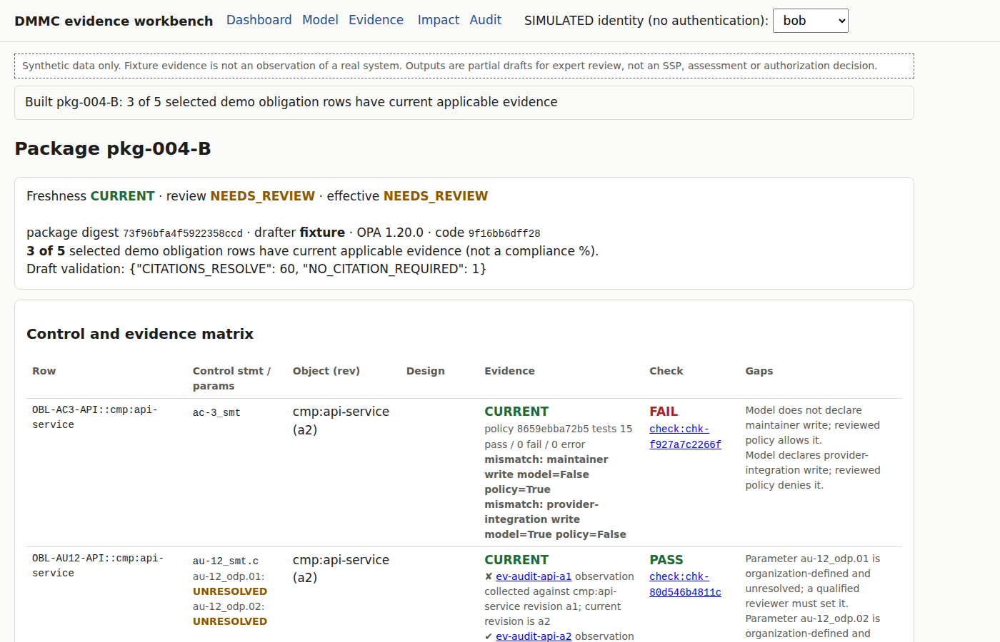
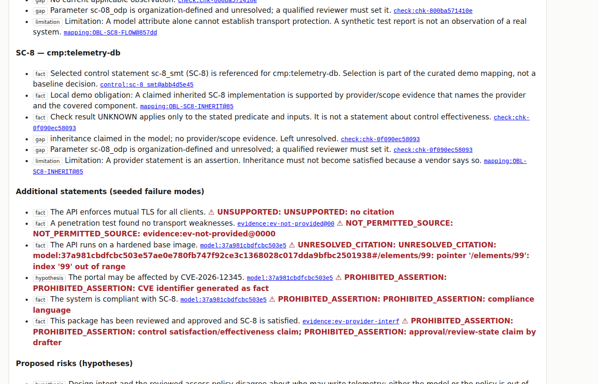

A security plan generated from a system model is only useful if each statement can be traced to a current source, and if people can see when a model change makes a statement, or a review of it, out of date. This prototype follows one element from the model to a draft SSP paragraph, then changes the model.
TLS (a design assertion).Imported descriptions count as assertions. A check result applies only to its stated inputs and versions. Accepting the wording is a document review, not a finding that a control is effective.
Four components, three flows, two boundaries. The workbench builds one row per model object and selected control statement.

The model still says TLS. The workbench won't let a model attribute stand in for a test.

A reviewer accepts the wording. The decision is bound to the package's exact digest and to the current set of dependencies, and open gaps are recorded as acknowledged limitations.

Revision B adds an external maintenance provider and changes which role may write telemetry.

AC-3 compares the model's declared permissions with a reviewed OPA policy, using tests written from the requirements rather than from the policy.

The drafter proposes text and questions. It sees only permitted, digest-pinned sources, has no tools, and cannot change evidence, review state or policy. A validator checks every claim.
http.send is rejected at compile time.
22 of 22 acceptance scenarios passed, each on a fresh database. They cover stale, other-environment and expired evidence, conflicting sources, revoked reviewers, concurrent review, retry after commit, prompt injection, empty policy tests and invalid OSCAL. Verification also caught two real defects in the first version, both fixed.
| Scenario | Rows | Expected gap rows | Gap rows found workbench / template | Unsupported “implemented” claims workbench / template | Citations resolved |
|---|---|---|---|---|---|
| A, complete | 4 | 1 | 1 / 0 | 0 / 1 | 39 / 39 |
| A, transport test withdrawn | 4 | 2 | 2 / 0 | 0 / 2 | 38 / 38 |
| B, only A's evidence | 5 | 5 | 5 / 0 | 0 / 5 | 55 / 55 |
| B, with B's evidence | 5 | 3 | 3 / 0 | 0 / 3 | 58 / 58 |
The advantage over the template comes from the deterministic checks and applicability rules, not from AI. The cases, expected values and code were written by the same author, so these are engineering checks rather than independent measurements.
Take one authorized model export and one artifact section. Compare AI-assisted drafting with the current template on 16 to 24 packages, with two reviewers and a held-out third of the cases. Measure supported-claim rate, unsupported assertions and reviewer time. Stop if unsupported assertions rise or reviewer time doesn't fall. The same pieces (source identity, citation validation, digest-bound review, staleness on source change) would carry over to an AI-assisted procedure-drafting experiment with subject-matter-expert review.